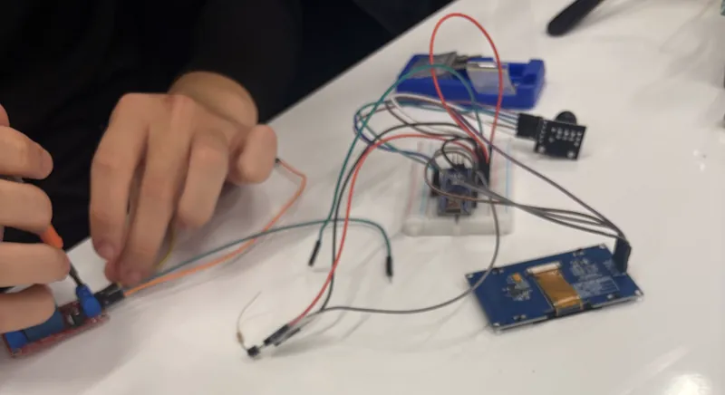
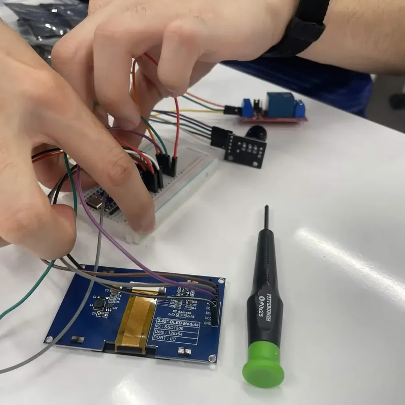

Integrative ecological monitoring
MESA DVC Foundation, Division of Engineering, Spring 2026 cohort
We study and support the 3 campus ponds at Diablo Valley College through reproducible measurements, controlled cultures (~30 °C capsule work) and field-ready platforms, documented alongside biology collaborators and published on our IO hub.

Engineering for the 3 campus ponds at Diablo Valley College
- Status
- Active and in progress, Spring 2026 cohort
- Primary record
- Measurements, notes, lab log (opens in a new tab)
- Artifacts
- GitHub repos, Tinkercad, ThingSpeak PoC
- Focus
- Water quality, habitat health, faster sampling
- Fields
- Pond ecology, Instrumentation, Open data, Lab and field
Biology and engineering, one shared dataset
We are building repeatable instrumentation so biology and engineering can share aligned datasets, from bacteria cultures at ~30 °C to field temperature, pH, and turbidity traces.


BUILD LOG
Building the heater controller
How the capsule's temperature controller moved from simulation to the bench, in the team's own photos.
Read the build log
Systems under development
Capsule, logging and robotics
-
Insulated chamber with viewing ports, power entry, and indicator, paired with a resistive heat path (e.g. Kanthal-class wire) and closed-loop control once the temperature controller stage is integrated.
Learn more
-
Microcontroller bring-up in simulation, then hardware: thermostat lesson analogs in Tinkercad, Wokwi for firmware checks, then capsule wiring with faculty-reviewed power limits.
Learn more
-
24/7 temperature & humidity with live display + ThingSpeak (or successor) channels.
Learn more
-
Robotic fish / boat concepts for mobile temperature and water-quality mapping; cart-scale prep for pH, scales, and hot-plate workflows supporting bio cultures.
Learn more

“A multi-disciplinary initiative dedicated to rigorous monitoring and scientific study of campus pond ecosystems through integrated sensor networks, lab cultures, and field-ready platforms.”
Technical overviewDVC Pond Research engineering team
Five build steps, in the team's own photos
See all 33 photos and documents


By the numbers
Every figure comes from the project's own record on this site: the ponds, the bench data, the capsule and the archive.
- Campus ponds monitored at Diablo Valley College
- 3
- Sensor readings logged in the proof of concept
- 847
- Target temperature for the growth capsule cultures
- 30°C
- For a team of 5 to sample the ponds by hand
- 2–3hours
- Readings in the measurement plan, 2 already logging from bench hardware
- 8
- Photos and documents in the gallery
- 33
Repositories and records
Measurements, field notes, and lab documentation on the project IO site; version control, color pipeline and simulations on GitHub, Tinkercad and Wokwi.
Reference library- IO documentation hub (opens in a new tab)Measurements, field notes, and lab documentation on the project IO site.I/O hub
- dvcpondresearch (opens in a new tab)MESA pond research group site source and deployment workflow.GitHub
- Color grading system (opens in a new tab)Match test-strip and experiment colors against controls for repeatable readouts.GitHub
- Campaign spreadsheet (opens in a new tab)Shared Google Sheet for pond runs, timestamps, and notes.Sheets
- ThingSpeak proof of concept (opens in a new tab)Temperature and humidity channels from bench firmware.ThingSpeak
- Tinkercad: incubator (temperature sense) (opens in a new tab)Tinkercad incubator path validated for sensor stage.Tinkercad